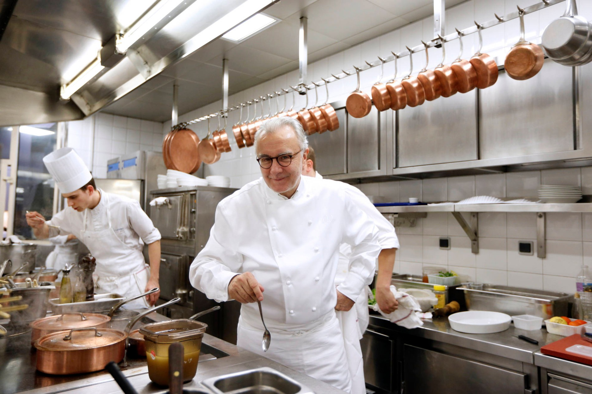
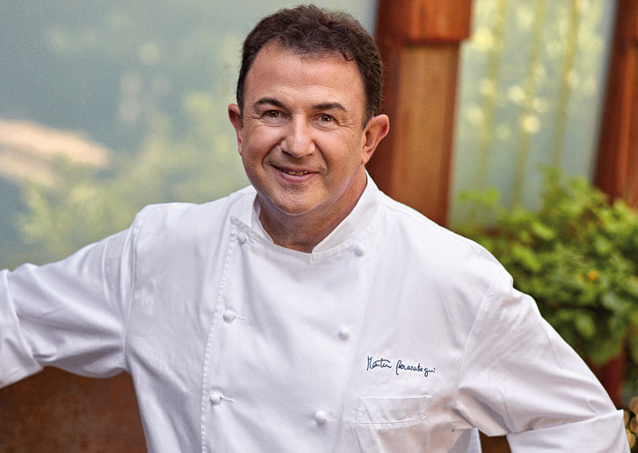
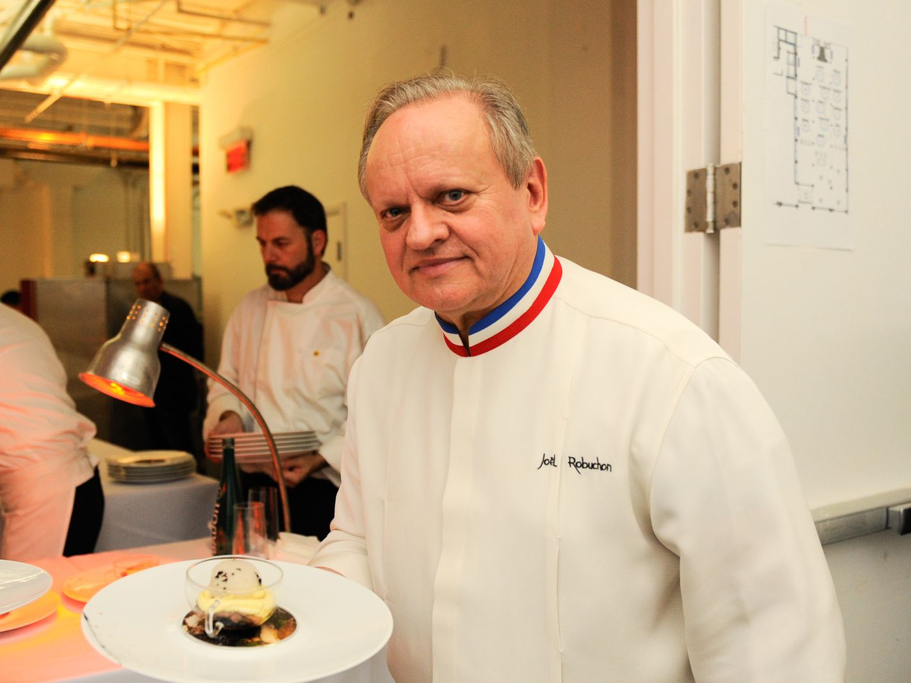
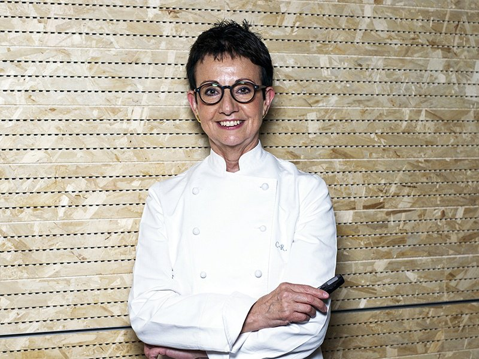

Everyone can't be good at cooking, but these chefs go beyond of what's actually possible in a kitchen. These are highly professional chefs around the world. They have earned many incredible Michelin stars from there food, restaurants and passion. These are some of the Top 10 chefs in the world!
Alain Ducasse is a French chef, he have a restaurant called “Alain Ducasse” in The Dorchester which has 3 Michelin stars. He holds the record of having the most michelin stars in 2021, which is 19 whole michelin stars. He has 34 famous restaurants around the world. One of his most famous dishes is the rum baba. It is pPresented under a silver cloche, the perfectly moist sponge is doused with fine and rare rum before being topped with a dollop of rich vanilla cream.
Martín Berasategui Olazábal is a Spanish chef expert in Basque cuisine and owner of an eponymous restaurant in Lasarte-Oria, Spain. Since 2001, it has been awarded three Michelin stars. He now holds 12 Michelin stars, which is really impressive.
This French chef had no formal culinary training when she assumed leadership of her family’s restaurant Maison Pic after her father’s death in 1997. After earning three stars for the restaurant, Pic opened up a second restaurant, Restaurant Anne-Sophie Pic, which celebrates her family’s culinary lineage from Valence. She is one of the best females to earn the most Michelin stars in her career. One of her most famous dishes is called Berlingots, which is an original dish she made herself. But just have a little Asian touch to it.
With four restaurants across the world and 7 Michelin stars, this Japanese chef is a culinary icon who has been promoting Japanese cuisine for nearly 50 years. Considered as the master of kaiseki cuisine, in 2020 he was named the recipient of the prestigious American Express Icon Award as part of Asia’s 50 Best Restaurants awards programme.
He is a Norwegian chef, who currently owns a popular Scandinavian restaurant called “Bagatelle”. In 1986 did Hellstrøm get Michelin star number 1, and in 1993 was Hellstrøm the first in Norway to earn star number 2. But Hellstøm couldn't keep up with the cooking after he became older, and was left with only 1 Michelin star left. Today Hellstrøm has his own TV-show, called “Truls alá Hellstrøm”. The show is about a comedian travelling the world with Hellstrøm, and learning new culinary informasjon. They do challenges with each other, and lots of fun stuff. You can watch the series in https://play.tv2.no/.
He’s known as one of the first chefs to recognize the importance of healthy food, putting consistent attention towards health and innovation in the gastronomy field. For more than 15 years, he has collaborated with international scientists and Italian universities to better understand the good balance between food and health. In his quest for lighter cooking, Beck places great emphasis on health and nutrition, carefully observing how food affects the body.
Introducing Joël Robuchon – the chef with the most Michelin stars. He holds the number one spot among the top 10 chefs in the world, which makes him the best chef in the world according to the Michelin star rating. Although he died with “only” 28 stars, at one point, Robuchon was the proud owner of 32. He was also named “Chef of the Century” on numerous occasions. He owns in total 12 restaurants, and was a culinary teacher for the world famous Gordon Ramsay.
Photo credits: https://www.eater.com
Carme Ruscalleda is the only lady to be considered one of the best chefs in the world that have been awarded 7 Michelin stars so far. She is one of the best female chefs with the most Michelin stars among female chefs.
Photo credits: https://www.christiesrealestate.com
Although this innovative chef discovered his love for cooking at a young age, he worked a variety of jobs before settling into his calling. While working as a repo man and a credit controller, Blumenthal taught himself the art of French cooking in his free time. The turning point in Blumenthal’s career came in 1995 when he opened his restaurant The Fat Duck in Bray, Berkshire. In 2005, The Fat Duck was named the best restaurant in the world, famous for its fourteen-course tasting menu featuring dishes such as nitro-scrambled egg and bacon ice cream. He currently has 6 Michelin stars, and is a very talented chef.
Did you think I would forget about the one and only, Gordon Ramsay. The man who has countless TV-shows, more than 35 restaurants around the world, and the man who inspires other talented chefs to cook. Gordon Ramsay is arguably the most famous chef in the world. Although he’s been awarded 16 Michelin stars throughout his career, he currently holds seven. His signature restaurant, Restaurant Gordon Ramsay in London, has held 3 stars since 2001, making it London’s longest-running three Michelin-starred restaurant.